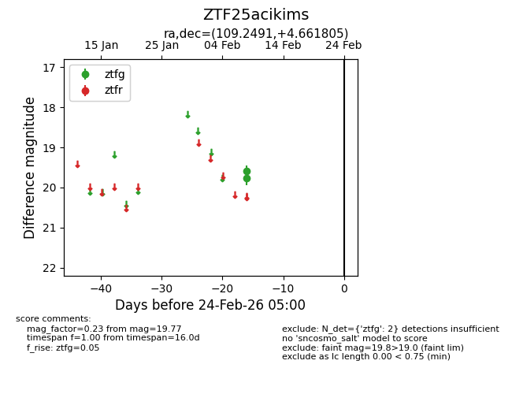
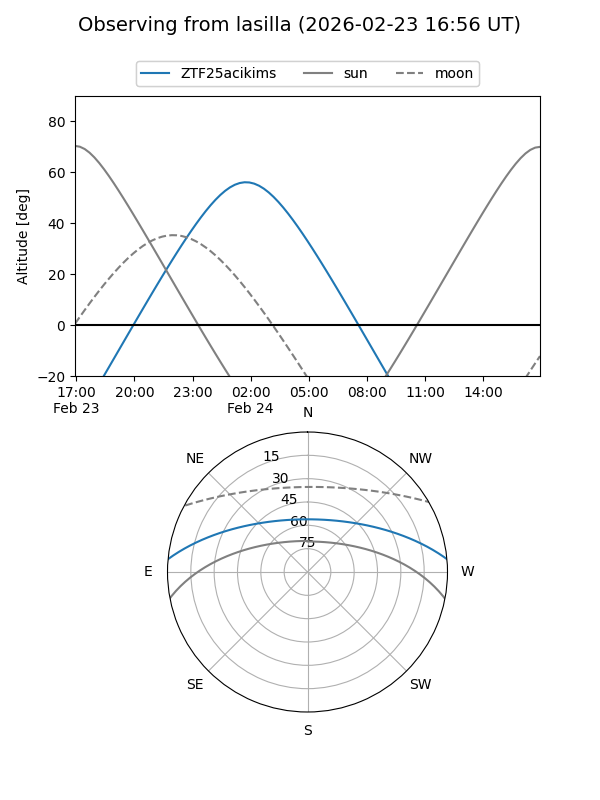
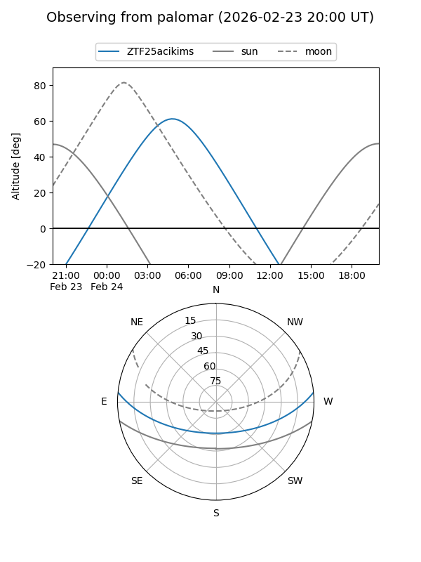

ZTF25acikims
Target ZTF25acikims at 2026-02-24 09:08
Aliases and brokers:
FINK: link
Lasair: link
ALeRCE: link
alt names
ZTF25acikims (ztf,fink_ztf)
Coordinates:
equatorial (ra, dec) = 109.2491,+4.66180
equatorial (HMS+DMS) = 07:16:59.77,+04:39:42.50
galactic (l, b) = (211.6737,+7.80356)
Flags:
Photometry:
last ztfg=19.77
2 ztfg detections
Lightcurve

Visibility


Additional plots